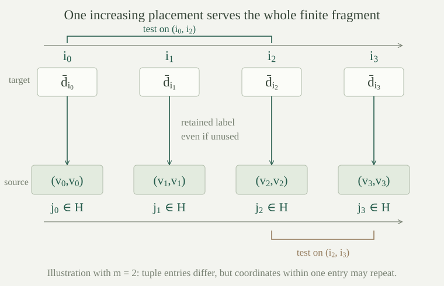

Fix a set-sized first-order language \(L\), a nonempty \(L\)-structure \(M\), a parameter set \(A\subseteq M\), and a positive finite tuple length \(m\). Let \(I\) be a linear order, and let \((\bar a_i)_{i\in I}\) be tuples in \(M^m\). We work classically with choice.
The sequence is order-indiscernible over \(A\) if, for every positive integer \(n\), every \(L(A)\)-formula \(\varphi(\bar x_0,\ldots,\bar x_{n-1})\), and all increasing index lists \(i_0<\cdots<i_{n-1}\) and \(j_0<\cdots<j_{n-1}\),
Parameters from \(A\) have the same fixed interpretations on both sides. Equivalently, any two increasing selections of \(n\) entries have the same complete type over \(A\) in their \(nm\)-variable context. We say simply indiscernible when order-indiscernibility is intended.
The condition does not require different entries to be different tuples. A constant sequence is indiscernible over any parameter set: the two assignments in the display are literally identical. When we require pairwise distinct entries, we mean \(\bar a_i\ne\bar a_j\) as tuples for \(i\ne j\). This is not a demand that all individual coordinates be different.
The indexed family is an indiscernible set over \(A\) if the same formula equivalence holds for any two index lists of the same finite length whose entries are distinct within each list, without requiring either list to be increasing.
Thus one may also permute the order in which chosen tuples are supplied to the formula. An indiscernible set is order-indiscernible for any ordering of its indices. Order-indiscernibility alone need not permit those permutations.
In an infinite structure in the equality-only language, every family of pairwise distinct single elements is an indiscernible set over the empty parameter set. In a dense linear order without endpoints, every strictly increasing sequence of single elements is order-indiscernible over the empty set. If the sequence has at least two entries, it is not an indiscernible set.
For equality, any finite list of distinct selected elements gives the same answers to all equality atoms: coordinates agree exactly when their positions agree. Boolean combinations therefore have the same truth values. Quantifier elimination for infinite equality structures gives the same conclusion for every formula. The argument permits arbitrary distinct index lists, including permutations.
For the order, any increasing selection gives exactly the same equality and strict-order comparisons between its coordinates. Dense-order quantifier elimination again gives agreement for every formula. But for \(i<j\), the formula \(x<y\) is true at \((a_i,a_j)\) and false at \((a_j,a_i)\). Interchanging those two indices violates the indiscernible-set condition.
The empty parameter set matters. Naming an entry in either example introduces a formula \(x=a\) that can distinguish it from the other entries.
Suppose \(P\) is a unary relation and \(P(a_i)\) holds exactly for the even natural numbers \(i\). Is \((a_i)_{i\in\omega}\) indiscernible over the empty set? What does selecting only even indices establish?
The original sequence is not indiscernible: the one-variable formula \(P(x)\) distinguishes its even and odd entries. Taking only the even indices makes this particular formula constantly true.
That selection alone does not establish agreement for every formula. Other predicates or relations may still distinguish its entries or their finite selections. Indiscernibility asks for all formulas of all finite arities, rather than one chosen test.
Let \((\bar a_i)_{i\in\omega}\) be any sequence in \(M^m\). For each of finitely many positive integers \(n\), choose a finite set \(\Delta_n\) of \(L(A)\)-formulas in \(n\) tuple variables. There is an infinite \(H\subseteq\omega\) such that, for each chosen \(n\), all increasing \(n\)-selections from \(H\) agree on every formula in \(\Delta_n\).
For a fixed \(n\), colour an \(n\)-element subset \(\{i_0<\cdots<i_{n-1}\}\) by the truth vector
There are at most \(2^{|\Delta_n|}\) colours. This is a finite positive number even when \(\Delta_n\) is empty. The infinite Ramsey theorem gives an infinite homogeneous subset for this colouring.
To handle the finitely many selected arities, apply the theorem successively inside the infinite subset obtained at the preceding step. Homogeneity for a previous colouring survives passing to a subset. The last infinite subset therefore satisfies all the requirements. This is the simultaneous finite-colouring argument. If there are no tests, take \(H=\omega\).
Although \(A\) may be infinite, each individual formula uses only finitely many parameter names. The finite collection of tests therefore involves only finitely many of those parameters. The colouring uses their fixed original values.
In the language with unary predicates \(P_0,P_1,\ldots\), take \(M=\mathbb N\), interpret \(P_n\) as \(\{n\}\), and let \(a_i=i\). Is there any infinite indiscernible subsequence over the empty set?
No. If a subsequence contains distinct entries \(r\) and \(s\), the formula \(P_r(x)\) is true at \(r\) and false at \(s\). It fails the indiscernibility condition already for single entries.
Every finite set of these predicate tests nevertheless admits an infinite homogeneous subsequence: choose indices outside their finite list of singleton interpretations, so all selected predicates are false. The finite-test lemma remains correct. It cannot be iterated through infinitely many tests and then justified by taking an intersection; infinitely many nested infinite sets can have empty intersection. Full indiscernibility will instead be obtained in a new elementary extension.
Fix a source sequence \((\bar a_i)_{i\in\omega}\) in \(M^m\), an elementary embedding \(f:M\to N\), and a sequence \((\bar b_i)_{i\in I}\) in \(N^m\). The new sequence is locally based on the source over \(A\) if, for every positive \(n\), every finite set \(\Delta\) of \(L(A)\)-formulas in \(n\) tuple variables, and every increasing \(i_0<\cdots<i_{n-1}\) from \(I\), there are \(j_0<\cdots<j_{n-1}\) in \(\omega\) such that all formulas of \(\Delta\) have matching truth values:
The notation \(f(A)\) in this display means that each original parameter label \(a\in A\) is interpreted by the particular value \(f(a)\). The source indices may depend on the finite test set and the selected target indices. This is not a requirement that one source selection match every formula simultaneously.
In particular, if a formula is true on every increasing source selection of its arity, it is true on every increasing new selection: apply the definition to that singleton test set. The same holds for a formula false on every source selection.
For a finite test set \(\Delta\) in \(n\) tuple variables, let \(P_\Delta\subseteq\{0,1\}^{\Delta}\) be the source truth patterns realized by increasing \(n\)-selections from the source sequence. This is a nonempty finite set: there is an increasing \(n\)-selection in \(\omega\), and at most \(2^{|\Delta|}\) possible patterns.
For \(\eta\in P_\Delta\), put \(\varphi^\eta=\varphi\) if \(\eta(\varphi)=1\), and \(\varphi^\eta=\neg\varphi\) otherwise. The finite pattern condition is the formula
A tuple satisfies this formula precisely when it matches all tests in \(\Delta\) on some increasing source selection. Indeed a true disjunct specifies exactly such a realized truth vector, and any matching selection gives that disjunct. If \(\Delta\) is empty, its sole pattern gives \(\Theta_\Delta=\top\).
Suppose now that the source tuples \(\bar a_i\) are pairwise distinct, and fix an infinite linear order \(I\). Use old-element names \(c_a\) for \(a\in M\), and disjoint fresh names \(d_{i,k}\), for \(i\in I\) and \(k<m\). Write \(\bar d_i=(d_{i,0},\ldots,d_{i,m-1})\). Form the indiscernibility theory consisting of these sentences:
The elementary diagram of \(M\), retaining all its old names; for every \(i\ne j\) in \(I\), the tuple inequality
for every \(L(A)\)-formula \(\varphi\) in \(n\) tuple variables and every two increasing \(n\)-lists \(\bar i,\bar j\) from \(I\), the sentence \(\varphi(\bar d_{\bar i})\leftrightarrow\varphi(\bar d_{\bar j})\); and, for every finite test set \(\Delta\) of that arity and every increasing \(\bar i\), the sentence \(\Theta_\Delta(\bar d_{\bar i})\).
In the last two families, replace each parameter name from \(A\) by its old-element name \(c_a\). Only positive integers \(n\) are used; zero-arity sentences already have the same truth regardless of any selected entries. These families form a set of sentences in a set-sized language, even when \(L,A\), or \(I\) is uncountable.
The tuple inequality asks for at least one different coordinate. No inequality is imposed between two coordinates of the same tuple, or between arbitrary coordinates of different tuples.
Every finite subset of the indiscernibility theory has a model on the original carrier \(M\), keeping every old-element name at its original value.
Fix a finite fragment. For every sentence choose one of its defining origins: an elementary-diagram sentence, a tuple inequality, an indiscernibility equivalence, or a finite pattern condition. Collect every target index in these chosen labels into one finite set, including indices whose tuple variables are unused and whose constants therefore disappear from the written sentence. List this finite index set in increasing order.
Collect the finitely many formulas from the chosen indiscernibility-equivalence origins, grouped by their tuple arities. By , find one infinite \(H\subseteq\omega\) homogeneous for all these tests. Choose from \(H\), in increasing order, one source index for each of the finitely many listed target indices. Interpret the whole tuple \(\bar d_i\) at a listed index by the corresponding source tuple.
Every selected indiscernibility equivalence holds: its two increasing index lists become increasing selections from \(H\), where the formula has a fixed truth value. Every selected tuple inequality holds because different listed target indices receive different source indices and the source tuples are pairwise distinct.
Every selected finite pattern sentence holds too. Its interpreted tuple list is itself an increasing source selection, so its truth vector belongs to the defining set \(P_\Delta\); the corresponding disjunct of \(\Theta_\Delta\) is true. This step needs no additional homogeneity assumption for the formulas inside that pattern sentence.
Interpret each old name \(c_a\) by \(a\), so every selected elementary-diagram sentence holds. Choose arbitrary values for any remaining fresh names, using nonemptiness of \(M\). These choices do not affect the selected sentences. The disjoint name families preserve both the original parameter values and the chosen source tuples. Thus the entire finite fragment is satisfied.

Let \(M\) be a nonempty structure in any set-sized language, let \(A\subseteq M\), and let \((\bar a_i)_{i\in\omega}\) be pairwise distinct tuples of a fixed positive finite length. For every infinite linear order \(I\), there are a nonempty structure \(N\), an elementary embedding \(f:M\to N\), and pairwise distinct tuples \((\bar b_i)_{i\in I}\) which are order-indiscernible over \(f(A)\) and locally based on the source over \(A\), with parameter names interpreted through this same \(f\).
The indiscernibility theory is set-sized, and supplies models for all its finite fragments. Arbitrary-language compactness gives a model of the entire theory. Take its \(L\)-reduct \(N\), set \(f(a)=c_a^N\), and set \(b_{i,k}=d_{i,k}^N\), retaining the interpretations from the expansion.
The elementary diagram lemma makes this specified \(f\) elementary. The tuple inequalities make the \(\bar b_i\) pairwise distinct. All the displayed formula equivalences give indiscernibility over the prescribed images of \(A\). Finally, each finite test set and increasing target selection satisfies its pattern sentence. By , some increasing source selection matches every test in that finite set. This is exactly local basedness.
Renaming the elementary copy allows \(M\) to be viewed as an elementary substructure of \(N\). The construction produces a new sequence in that extension; it does not claim a fully indiscernible subsequence of the original sequence.
After enlarging the language to provide witnesses for every formula, Skolem hulls of an indiscernible skeleton turn these sequences into generated elementary models.
Can one omit the distinctness assumption in the construction and still demand distinct new tuples? What remains true without that demand?
In general one cannot keep both demands. If every source tuple equals a fixed \(\bar a\), the formula \(\bar x_0=\bar x_1\), meaning coordinatewise equality, is true on every increasing pair from the source. Local basedness therefore makes every increasing pair of new tuples equal. On an infinite index order the new tuples cannot be pairwise distinct.
If the tuple-inequality sentences are omitted, all other parts of the finite-satisfiability proof work for any source sequence. Ramsey still gives homogeneous tests, and any chosen increasing source selection still supplies its own truth pattern. Thus an indiscernible, locally based new sequence exists, with repetitions permitted. Distinct source entries are what justify the additional tuple inequalities.
In an infinite equality-only structure, choose pairwise distinct elements \(a_i\) and put \(\bar a_i=(a_i,a_i)\). Is this a sequence of distinct two-tuples? Is it indiscernible over the empty set, and may a locally based new sequence have unequal coordinates within one entry?
The tuples are pairwise distinct because equality of the two-tuples would give equality of their first coordinates. Their coordinates within each tuple nevertheless coincide.
Every increasing finite selection has the same equality pattern: the two coordinates within a block agree, while coordinates from different blocks differ. Equality quantifier elimination gives agreement for every formula, so the sequence is order-indiscernible; the same argument allows arbitrary distinct index lists and makes it an indiscernible set.
The formula \(x_0=x_1\) about the two coordinates of a single entry is true throughout the source. Local basedness preserves it in every new entry. Thus the construction retains the repeated-coordinate pattern, rather than changing it into coordinatewise distinctness.